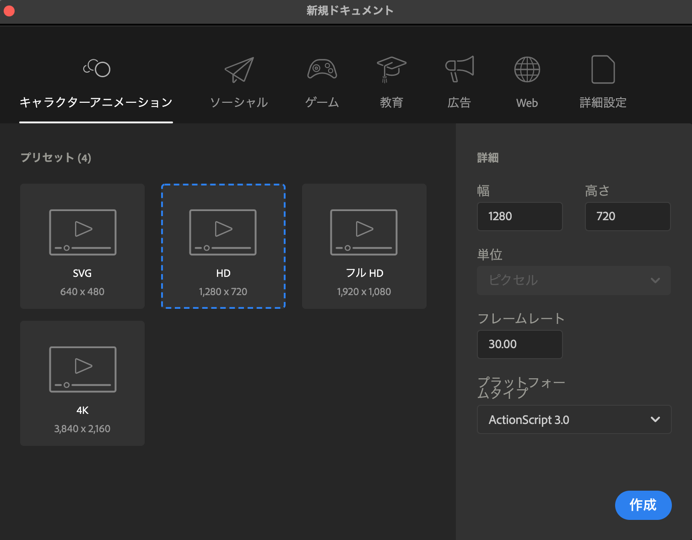

1. GSAPの復習
1-1. 準備
<!DOCTYPE html>
<html lang="ja">
<head>
<meta charset="UTF-8">
<meta name="viewport" content="width=device-width, initial-scale=1.0">
<title>GSAP</title>
<link rel="stylesheet" href="https://unpkg.com/modern-css-reset/dist/reset.min.css">
<style>
.box {
width: 100px;
height: 100px;
margin: 1000px 0 1000px;
background-color: #000;
}
</style>
</head>
<body>
<div class="box"></div>
<small>© trident.</small>
<script src="https://cdnjs.cloudflare.com/ajax/libs/gsap/3.12.4/gsap.min.js"></script>
<script src="https://cdnjs.cloudflare.com/ajax/libs/gsap/3.12.4/ScrollTrigger.min.js"></script>
<script>
</script>
</body>
</html>1-2. アニメーションの設定
// ゴールの状態を指定する（現在の状態からのアニメーション）
gsap.to(".box", {
x: 100,
delay: 1,
});
// スタートの状態を指定する（現在の状態に戻るアニメーション）
gsap.from(".box", {
x: 100,
delay: 1,
});
// 指定した状態(初期状態)から、指定した状態(完了状態)にアニメーションさせる
gsap.fromTo(".box", {
x: 100
}, {
x: 200,
delay: 1,
});- 【第2引数に設定できる値】
-
プロパティ名 説明 初期値 duration 1回のアニメーションの時間を指定 0.5 delay 何秒遅らせてアニメーションを始めるかを指定 0 repeat アニメーションを繰り返す回数を指定 0 repeatDelay アニメーションをリピートするまでの時間を指定 0 yoyo リピート時に反復挙動にするかを指定 false ease アニメーションの進捗タイミングを調整 power2.inOut
Ease Visualizerその他 Special Properties
1-3. ScrollTriggerの設定
gsap.to(".box", {
x: 100,
scrollTrigger: {
trigger: ".box",
},
});- 【ScrollTriggerのプロパティ】
-
プロパティ名 説明 単位 初期値 trigger アニメーションのトリガー要素を指定 なし なし start アニメーション開始位置 文字列、px、% top bottom end アニメーション終了位置 文字列、px、% bottom top markers マーカー表示 真偽値 false scrub スクロール量に合わせてアニメーション 真偽値 false pin 要素を固定 真偽値 false toggleActions アニメーション開始のタイミングと動き方を指定 文字列 play none none none
1-4. タイムライン
gsap
.timeline({
repeat: -1,
repeatDelay: 0.5,
})
.to(".box", {
x: 100,
})
.to(".box", {
y: 100,
})
.to(".box", {
rotate: 360,
})
.to(".box", {
x: 0,
})
.to(".box", {
y: 0,
});- 【タイムラインのネスト】
-
// 1つ目のタイムライン const text01 = gsap .timeline() .to(".text01", { y: -50, }) .to(".text01", { x: 50, }); // 2つ目のタイムライン const text02 = gsap .timeline() .to(".text02", { y: -50, }) .to(".text02", { x: 50, }); // 全体のタイムライン gsap .timeline({ repeat: -1, repeatDelay: 0.5, yoyo: true, }) .add(text01) .add(text02, "-=0.5");
- 【ScrollTriggerの設定】
-
const box01 = gsap .timeline() .to(".box01", { y: -50, }) .to(".box01", { x: 50, }); const box02 = gsap .timeline() .to(".box02", { y: -50, }) .to(".box02", { x: 50, }); gsap .timeline({ scrollTrigger: { trigger: ".box", start: "top 80%", end: "bottom 20%", markers: true, toggleActions: "play none none reset", }, }) .add(box01) .add(box02, "-=0.5");
1-5. 複数要素のアニメーション
gsap.utils.toArray(".fadeInUp").forEach(target => {
gsap.from(target, {
y: 100,
opacity: 0,
scrollTrigger: {
trigger: target,
start: "top 80%",
toggleActions: "play none none reverse",
},
});
});2. GSAPの補足
3. 最終課題
「トライデントコンピュータ専門学校Webデザイン学科の魅力を伝えるアニメーションの制作」
- 【提出先】
- Googleドライブ
- 【見本】
- 高木が作ったやつ
- 【ターゲット】
- オープンキャンパスに来校した高校生、およびその保護者さま。
- 【目的】
- Webデザイン学科の魅力をアニメーションにすることで、「正確に」「わかりやすく」「楽しく」情報を伝える。
- 【制作方法】
- 以下のどちらかを選択する。
-
- 「Adobe Animate」を使用しアニメーションを制作。動画に書き出して提出。
- 「GSAP」を使用しスクロールアニメーションを施したWebページを制作。（デザイン含む）
- 【アニメーションの内容】
- 以下の3つから1つを選択する。
- 【スケジュール】
-
- 1/10(水)：最終課題制作
- 1/17(水)：最終課題制作
- 1/24(水)：最終課題制作
- 1/31(水)：最終課題制作
- 2/5(月)：HTML+CSS実習の時間に発表
- 【注意点 - 共通】
-
- アニメーションの最初や、ページの最初に「トライデントコンピュータ専門学校Webデザイン学科 ○○について」のようにタイトルを明記すること。
- 最低限含める内容であり、自分で考えて追加しても良い。
- 情報の順番は自由。（より伝わりやすい順番を考えること）
- 細かい文言は自由。
- テキストだけでなく、写真・イラスト・アイコン・グラフなどを用いてわかりやすくすること。（「写真 無料 まとめ」などで検索）
- ロゴデータが欲しい人はこちら
- 【注意点 - Adobe Animate】
-
-
新規ファイル作成時に「キャラクターアニメーション」-「HD」を選択すること。

- 読み込んだ写真等の素材は「シンボル」に変換すること。
- アニメーションの時間は自由だが、あまりにも短いものは不可とする。
-
新規ファイル作成時に「キャラクターアニメーション」-「HD」を選択すること。
- 【注意点 - GSAP】
-
- ランディングページ1ページを制作し、効果的なスクロールアニメーションを施すこと。
- 見出しや背景などのデザインも考えること。（CSSでの装飾がメインで良い）
◎学科について
学科の特徴
- デザインとプログラミング、両方の知識を身につける。
- グループワークや実践を通じて、楽しく成長できる。
- MacBook Airを無料貸し出し。家でも同じ環境で学習できる。
主なカリキュラム「1年次」
- 【Webデザイン、カラーデザイン】
- 各種ツールの操作方法から、Webサイト・アプリケーションのデザイン、カラースキームの知識、基礎構成力など、デザインに必要な幅広いスキルを実践を通して学びます。
- 【HTML基礎、JavaScript基礎】
- Web制作に関わる職業にとって必須となる「HTML・CSS・JavaScript」などのプログラム言語を段階的に学び、最終的には背策現場に即した知識を習得します。
- 【造形演習】
- デッサン・アイデア発想・展開法・色彩・平面構成・テーマ別クロッキーなどを通じて、ビジュアルデザインの基礎力を学ぶとともに、ものを造ることの楽しみ方も掴みます。
- 【社会人基礎力】
- 社会人として必要な力、特に「前に踏み出す力（アクション）」「考えぬく力（シンキング）」「チームで働く力（チームワーク）」をワークショップを通じて学び、業界にとらわれないスキルと技術を習得します。
主なカリキュラム「2年次」
- 【Webサイト制作】
- クライアント様を募り、実際に公開させていただけるWebサイトを制作することにより、現場に即した一連の流れ（ヒアリング・企画・設計・実装・テスト等）を体験・習得します。
- 【アプリ制作】
- UX手法を使った制作や考え方を学び、チームでのアプリケーション制作を行います。完成した作品は各種コンテストに応募し、就活の際のアピール材料としても活用していきます。
- 【卒業制作】
- 2年間の集大成となる作品を各自制作します。卒業制作展に展示をすることで、作品に対する責任感やフィードバックの大切さを学ぶとともに、仲間たちと切磋琢磨しながら精一杯頑張ることの素晴らしさを体感します。
- 【コミュニケーションスキル】
- 英会話、ワークショップを中心に、他人とコミュニケーションを深め、意志の疎通を行なう知識・技術を学びます。
コンテスト実績（※任意）
- 2022年「第6回専門学校HTML5作品アワード」入賞
- 2022年「信州未来アプリコンテスト0(ZERO)」《U-29》部門 優秀賞
- 2021年「第5回専門学校HTML5作品アワード」入賞
- 2021年「第16回若年者ものづくり競技大会」敢闘賞
- 2020年「第4回専門学校HTML5作品アワード」神戸デジタル・ラボ賞
- 2019年「第5回ソレコン☆ポスコン（ポスターデザインコンテスト）」特別賞
- など、多数。
講師紹介
- 【河口英生】
- プロフィール画像
- 大学（工学部経営工学科）在学中にCG（コンピュータグラフィックス）に興味を持ち、卒業後、カメラマンのアシスタントをしながら、Macintoshのスクールに通う。スクール講師の紹介で、デザイン事務所に入社し、広告ポスター、告知フライヤー、月刊誌の誌面デザインなど、様々なグラフィックデザインに携わる。トライデントコンピュータ専門学校CGイラスト学科講師を経て、2009年Webデザイン学科講師。
- 【高木寛貴】
- プロフィール画像
- 国際情報科学芸術アカデミー［IAMAS］DITコースにて、プログラミング・情報デザイン・フィジカルコンピューティングなどを学ぶ。卒業後、美大の助手やWeb制作会社のエンジニアを経て、トライデントコンピュータ専門学校Webデザイン学科の講師に就任。主にプログラミングやプロジェクト制作の授業を担当する。
各種データ
- 【クラス人数】
- 25名前後
- 【男女比】
- 男7：女3
- 【年齢】
- 高卒8：その他2
- 【出身】
- 愛知5：岐阜3：三重1：その他1
- 【制作経験】
- あり4：なし6
◎就職について
目指す業種
- 【Web制作会社】
- クライアントの要件に基づいてウェブサイトやアプリを制作する企業です。プロジェクトごとに異なるクライアントと協力し、様々な業種やデザインの要望に対応します。デザイン、コーディング、開発、テスト、およびクライアントとのコミュニケーションが主な業務です。
- 【印刷会社】
- 主に印刷物（パンフレット、ポスター、名刺など）を制作する企業です。デザインだけでなく、印刷技術や素材の知識も求められます。デザインの作成や修正、印刷プロセスの管理、印刷物の品質管理が主な業務です。
- 【ECサイト運営会社】
- オンラインで商品やサービスを販売するためのウェブプラットフォームを運営する企業です。ウェブサイトの更新、ECプラットフォームの管理、注文処理、在庫管理、マーケティング、顧客対応が主な業務です。
- 【自社サービス会社】
- 独自のサービスや製品を提供する企業です。例えば、SaaS（Software as a Service）企業が自社製品を開発・提供します。デザイン・開発、自社サービスの改善、ユーザーエクスペリエンスの向上が主な業務です。
- 【一般企業のWeb担当者】
- その企業のウェブプレゼンスを管理・維持する役割を果たします。多くの場合、企業の内部に所属しています。ウェブサイトの更新、コンテンツ管理、デザインの調整、社内部門との連携、セキュリティ対策などが主な業務です。
主な就職先
- 【株式会社アクアリング】
-
- Web制作会社
- Webサイト構築・運用サポートにとどまらず、コミュニケーション戦略立案や、UX/UIをメインとしたデザインコンサル、IoTプロダクト開発支援などを提供する、名古屋を代表するWeb制作会社。
- 【株式会社カークスヴィル】
-
- Web制作会社
- ウェブサイトを中心とした、インタラクティブなクリエイティブ・デザインに強みをもつデジタル・プロダクション。アニメ・ゲーム・音楽などエンターテイメントの分野を中心とした公式サイト・キャンペーンサイト・コーポレートサイトを多く制作している。
- 【honu加藤珈琲店株式会社】
-
- ECサイト運営会社
- コーヒーのインターネット通販のパイオニアで、業界トップクラスの売上を記録。楽天市場では「ショップオブザイヤー」を13年連続受賞している。
- 【株式会社寿商店】
-
- 一般企業のWeb担当者
- 昭和55年創業 名古屋にある魚屋。飲食店「下の一色」など12店舗を運営する。「魚屋だからできること」「魚好きを増やしたい」をモットーに、毎日市場直送の美味しいお魚をお店や通販でお届けしている。
就活スケジュール（※任意）
- 1年次 10月〜：自己分析、企業研究、履歴書指導
- 1年次 12月〜：インターンシップ参加
- 1年次 2月：進級制作展
- 2年次 3月：ポートフォリオサイト制作
- 2年次 3月〜：エントリー開始
- 2年次 6月〜：試験、面接
就職サポート体制
- 【学内就職試験&企業説明会】
- 企業の人事担当の方が来校し、当校にて就職試験・企業説明会を実施します。名古屋だけでなく、東京や大阪など遠方の有名・優良企業もトライデント生のために来校します。
- 【トライデント合同企業説明会】
- 「トライデントグループ校の学生」のみが対象の企業説明会。多くの採用担当者が集まります。業界や職種を直接知るチャンス。また、ここでの出会いをきっかけに企業から声がかかることもあります。
- 【企業研究授業&就職研究授業】
- 卒業年次進級前の半年をかけて実施される就職準備の時間。週1回の授業で自己分析、履歴書・エントリーシート作成、筆記試験対策など段階的に無理なく準備を進めていきます。
- 【就職特別講座】
- 有名紳士服メーカーより講師をお招きして実施する「身だしなみ講座」や、外部講師を招き、これからの就職活動を有利に進めていくための手法・考え方を学ぶと同時に、学生の「やる気」を上げる講演をしていただきます。
- 【模擬面接&キャリアアドバイス】
- マナーのプロ講師が模擬面接を通して、言葉遣いなどを細かくレクチャーします。また、キャリアコンサルタントによるキャリアアドバイスで、一人ひとりの就職活動に対する不安にも寄り添います。
- 【インターンシップ】
- 企業が募集している一般的なインターンシップだけでなく、多数のクリエイター・エンジニアを業界に送り出してきたトライデントだからできる、トライデント生だけのインターンシップも実施しています。夏休み（8月〜9月）などを利用して、あこがれの業界企業で実践体験!肌で業界の今を感じることができるので、自分の適性を知ったりスキルを上げたりすることができます。
各種データ
- 【内定率】
- 5年連続100%
- 【業界就職率】
- 60%〜70%
- 【業種の割合】
- Web制作会社6：IT系2：印刷会社1：その他1
- 【職種の割合】
- デザイナー4：エンジニア5：その他1
- 【地域】
- 愛知岐阜三重7：東京2：その他1
◎Web業界について
Web業界の魅力
- 【自分のデザインを世界中に発信出来る】
- SNSの普及やオンラインでのコミュニケーションの増加により、自分の作品を世界中の人々に見てもらえるチャンス、専門家や他のクリエイターとつながるチャンスが広がっています。斬新なデザインで人をあっと驚かせたり、無名なサービスを世の中に広めたり、Webサイトには様々な可能性があります。世界中の反応をダイレクトに受けられることは、Webデザインの大きなやりがいです。
- 【ライフスタイルに合わせた働き方ができる】
- 例えば、自宅で仕事をするなど、自由に働く場所を選ぶことが可能なこともWeb業界の魅力です。また、プログラミング言語はほぼ世界共通のため、海外でグローバルな働き方ができる可能性もあります。起業してみたい、主婦や子育てをしながら少しでも働きたい、退職したあとも働きたいなど、Web業界では自分のライフスタイルに合わせた働き方を見つけることができます。
- 【市場規模が拡大している】
- Web業界は電子書籍やオンラインゲーム、SNSなど様々なサービスが展開されており、いずれも拡大傾向にあります。さらに、コロナの影響により特にeコマースの領域で需要が高まっています。フードデリバリーが爆発的に流行したり、生活必需品の購入を通販に切り替えたり、ライフスタイルの大きな変化にWebサービスが密接しています。
主な職種
- 【Webプロデューサー】
- Webサイトのターゲットやコンセプト、イメージを顧客と相談しながら作り上げ、納期や予算、人員を管理しながらプロジェクト全体を統括する。Webの専門知識・営業力・交渉力・運営と管理の能力などが求められる。
- 【Webディレクター】
- クライアントの要望にかなったWebコンテンツを作り上げるため、プロジェクトの進行管理者としてプロジェクトを監督・指揮・管理する。IT全般の基本知識・コミュニケーション能力・相手の要望を引き出すヒアリング力などが求められる。
- 【Webデザイナー】
- クライアントがイメージするWebサイトのコンセプトに合わせて、見やすく使い勝手の良いWebサイトのデザインを作る。デザイン関連の知識・コミュニケーション能力・デザイン制作のツールを使いこなす技術力などが求められる。
- 【Webエンジニア】
- 設計書に沿ってプログラミングすることで、クライアントの要望通りのシステムを実現するために作業を進める。「Java」「PHP」「JavaScript」「Ruby」などさまざまなプログラム言語を操るスキルが求められる。
- 【Webマーケター】
- 商品やサービスを売るため、Webサービスの販促活動や集客、ブランド認知向上のためのマーケティングを行う。情報収集能力・情報分析能力・企画力・コミュニケーション能力などが求められる。
Webサイトができるまで（※任意）
- 【調査・分析・企画】
- 目的やターゲットを明確にし、市場調査や分析を行い、Webサイトの企画を固める。
- 【サイト設計】
- ユーザー体験を設計し、どのようなコミュニケーションを行うか、その際にどのような媒体でコンテンツを提供するかなど検討する。
- 【コンテンツ・デザイン制作】
- コンセプトやルールを決めて、より最適なデザインを制作する。
- 【実装・システム開発】
- 設計やデザインをWebサイトに反映していく。
- 【リリース・保守運用】
- どのユーザーにもデザイン通りの表示を見えているか、仕様通りシステムが動作しているかチェックを行い、問題がなければ公開する。
Webデザイナーの1日
- 【9:30：出社】
- 出社すると、まずはじめに社内の昨日の日報をチェックします。 社内で起きている問題の中で、自身がWebデザイナーとして解決できることを見つけたり、自分が関わる他部署の案件の進捗などを確認します。
- 【10:00：情報収集】
- 最新のデザインやコーディングに関する技術の情報収集は欠かせません。Web業界の技術は、たったの二十数年で現在の形にまで至り、今でも日々急速に進歩しています。Webデザイナーは、ユーザーに受け入れられるデザインを作ること以外に、コーディングなどのWeb業界のルール変化にも常に対応していく必要があります。
- 【10:30：デザイン作業】
- 作成中のページのデザインを作成。 社内の人に意見をきいたりします。
- 【13:00：ランチタイム】
- ほとんどの会社では、お昼休憩は自由な時間に取ることができます。 デザイン作業などアウトプットを必要とする作業は、集中しやすい午前中に行うことが多いです。そのため、お昼は少し遅めに取ります。
- 【14:00：ミーティング】
- Webサイトおよびサービスをより良くしていくために、Webサイトの閲覧数などの計測結果や、収益などのデータを見ながらチームで意見を出し合います。Webデザイナーと数字は一見関連がなさそうですが、デザインはあくまで売上などの目的を達成するための手段です。
- 【15:00：コーディング】
- 運営サイト内の改善や修正もWebデザイナーの仕事です。ただ見た目どおりにコーディングするだけではなく、修正してもトラブルが起きにくく効率的なコードを書くスキルも必要です。
- 【18:30：退社】
- 翌日の業務の確認と今日の日報作成を行い、業務終了です。クライアントからの依頼など、締切がある業務の場合は残業が発生することもあります。
各種データ
- 【業界規模】
- 5.9兆円（46位／190業界）
- 【伸び率】
- +9.7%（12位／190業界）
- 【利益率】
- +3.3%（70位／190業界）
※参考元：業界動向search.com｜インターネット業界